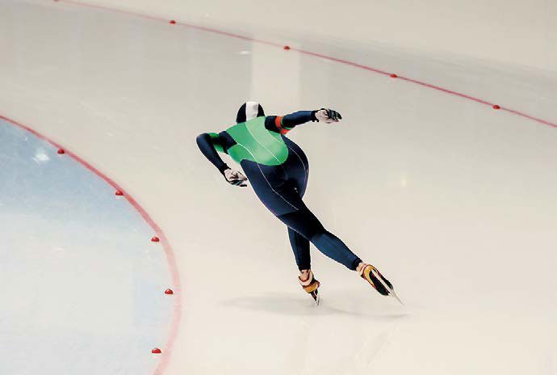
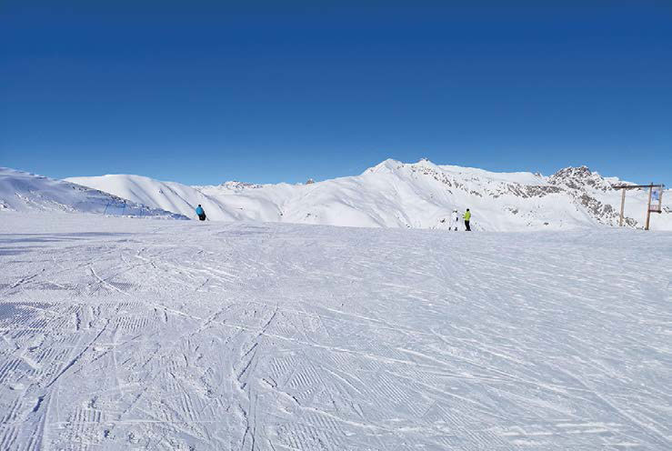
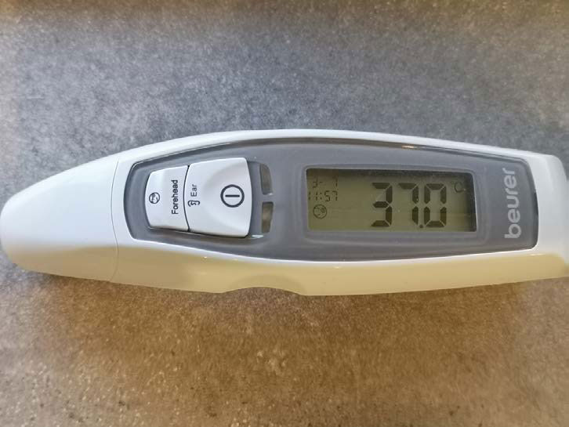
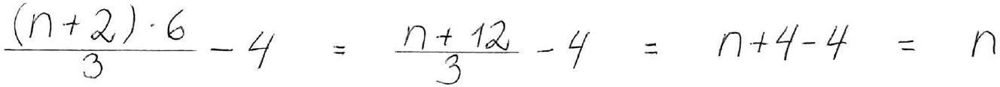
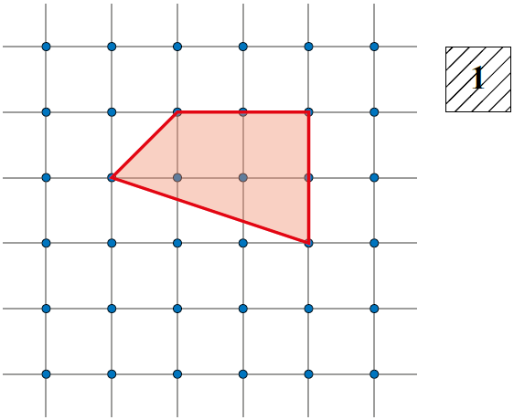

Matematik FP9
Prøven med hjælpemidler
Til dette opgavesæt hører regnearksfiler til opgave 2 og 5 og et svarark til opgave 7
Fredag den 2. december 2022
Kl. 10.00-13.00
Kære elev
Prøven består af 7 opgaver. Du har 3 timer til at løse dem.
Ved hver opgave står der, hvor mange point den højst kan give.
Prøven kan i alt højst give 64 point. Du bestemmer selv, hvilken rækkefølge du laver opgaverne i, og hvor lang tid du vil bruge på hver af dem.
Det er vigtigt, at du begrunder dine svar i alle opgaver.
Det betyder, at du i hver opgave skal vise eller forklare, hvordan du er nået frem til dit svar. Du kan fx begrunde dit svar med tekst, beregninger og/eller tegninger.
En del af de point, du kan få i hver opgave, kommer fra dine begrundelser. I de fleste opgaver kan du ikke få det højeste antal point, hvis du ikke begrunder dit svar, selv om dine resultater er rigtige.
I nogle af opgaverne skal du beregne et antal eller en størrelse. I andre opgaver skal du vise, hvordan du finder frem til et bestemt resultat eller afgøre, om en påstand er sand eller falsk.
Der er også opgaver, hvor du skal løse et matematisk problem ved at undersøge. I disse opgaver forventer vi ikke, at du på forhånd kender en metode, du kan bruge til at løse problemet. Ordet ’undersøg’ signalerer, at du selv skal finde på en god måde at løse problemet på ved at bruge matematik, du kender.
God arbejdslyst.
Styrelsen for Undervisning og Kvalitet
Prøven består af 7 opgaver. Du har 3 timer til at løse dem.
Ved hver opgave står der, hvor mange point den højst kan give.
Prøven kan i alt højst give 64 point. Du bestemmer selv, hvilken rækkefølge du laver opgaverne i, og hvor lang tid du vil bruge på hver af dem.
Det er vigtigt, at du begrunder dine svar i alle opgaver.
Det betyder, at du i hver opgave skal vise eller forklare, hvordan du er nået frem til dit svar. Du kan fx begrunde dit svar med tekst, beregninger og/eller tegninger.
En del af de point, du kan få i hver opgave, kommer fra dine begrundelser. I de fleste opgaver kan du ikke få det højeste antal point, hvis du ikke begrunder dit svar, selv om dine resultater er rigtige.
I nogle af opgaverne skal du beregne et antal eller en størrelse. I andre opgaver skal du vise, hvordan du finder frem til et bestemt resultat eller afgøre, om en påstand er sand eller falsk.
Der er også opgaver, hvor du skal løse et matematisk problem ved at undersøge. I disse opgaver forventer vi ikke, at du på forhånd kender en metode, du kan bruge til at løse problemet. Ordet ’undersøg’ signalerer, at du selv skal finde på en god måde at løse problemet på ved at bruge matematik, du kender.
God arbejdslyst.
Styrelsen for Undervisning og Kvalitet
1
I skøjtehallen
Opgave 1 giver højst 11 point|
Magnus vil i skøjtehallen. Tabellen viser skøjtehallens priser. |
|
|||||||||||||
|
||||||||||||||
| 1.1 |
Hvor stor er prisforskellen på et 10-turskort til børn og et 10-turskort til voksne?
Magnus er 15 år. |
|||||||||||||
| 1.2 |
Hvor mange penge sparer Magnus pr. tur i skøjtehallen, hvis han køber et 10-turskort i stedet for 10 enkeltbilletter?
|
|||||||||||||
| 1.3 |
Hvor mange procent koster et 3-månederskort mere for voksne end for børn?
Magnus overvejer, hvad der er billigst for ham, hvis han vil i skøjtehallen flere gange. |
|||||||||||||
| 1.4 |
Undersøg, hvor mange gange Magnus skal gå i skøjtehallen på 3 måneder, for at det bedst kan betale sig for ham at købe
|
|||||||||||||
Foto: Colourbox
2
Skøjtekonkurrence
Opgave 2 giver højst 6 point|
Tabellen viser tre skøjteløberes 10 seneste tider på 500 m hurtigløb. Tiderne står også i filen TIDER_DEC_2022. |

|
||||||||||||||||||||||||||||||||||
|
|||||||||||||||||||||||||||||||||||
|
Skøjteløbernes træner skal udvælge én af løberne til en konkurrence i 500 m hurtigløb.
|
|||||||||||||||||||||||||||||||||||
| 2.1 |
Du skal sammenligne data for de tre skøjteløbere og skrive en begrundelse, træneren kan have for at vælge hver af de tre skøjteløbere. Det vil sige en begrundelse for at vælge
|
||||||||||||||||||||||||||||||||||
Foto: Colourbox
3
Skiløb
Opgave 3 giver højst 9 point|
Sofia er på skitur. Skitsen viser et tværsnit af en pist, hun løber på. Pisten har en konstant hældning på 8°. |

|
|
| 3.1 |
Tegn tværsnittet i et målestoksforhold, du selv bestemmer. Du behøver ikke at skrive, hvilket målestoksforhold du bruger.
Sofia prøver en anden pist, som også har en konstant hældning på 8°. Længden af denne pist er ca. 1200 m. |
|
| 3.2 |
Forklar, hvorfor højden af denne pist er ca. 3 gange så stor som højden af pisten på skitsen.
Pister, der har en hældning på 8° til 15°, kalder man blå pister. Sofias mor påstår, at en sådan hældning svarer til et gennemsnitligt fald på 15 % til 25 %. |
|
| 3.3 |
Brug formlen i den gule boks til at undersøge, om Sofias mor har ret.
|
|
Foto: Opgavekommissionen i matematik
4
Temperatur
Opgave 4 giver højst 10 point|
I Danmark måler vi temperatur i grader celsius. I nogle andre lande bruger man grader fahrenheit. Formlen i den gule boks viser sammenhængen mellem temperaturer målt i grader celsius og grader fahrenheit. |

|
||
|
|||
| 4.1 |
Hvor mange grader fahrenheit svarer 0 grader celsius til?
|
||
| 4.2 |
Hvor mange grader celsius svarer 212 grader fahrenheit til?
|
||
| 4.3 |
Tegn en graf, der viser sammenhængen mellem temperaturer målt i grader celsius og grader fahrenheit.
Magnus påstår, at man kan omskrive formlen i den gule boks til C = F 1,8 - 32.
|
||
| 4.4 |
Har Magnus ret i sin påstand?
|
||
Foto: Opgavekommissionen i matematik
5
Middeltemperatur i januar
Opgave 5 giver højst 8 point
Punkterne i diagrammet herunder viser middeltemperaturerne for januar hvert år fra 1874 til 2021. I filen JANUAR_DEC_2022 er en liste med middeltemperaturerne.
|
||||
| 5.1 |
Hvor mange år var middeltemperaturen for januar over 4 grader celsius?
|
|||
| 5.2 |
Hvad var middeltemperaturen for januar i den 30-årige periode fra 1992 til 2021?
Magnus har læst, at middeltemperaturerne for januar steg i perioden fra 1874 til 2021. |
|||
| 5.3 |
Er du enig i, at middeltemperaturerne steg? Du skal bruge datasættet til at begrunde dit svar.
|
|||
6
En regneopskrift
Opgave 6 giver højst 12 point|
Anna har tegnet en cirkel med en diameter og to linjestykker: |
||||||||||||||
|
||||||||||||||
| 6.1 |
Hvilket tal ender man med i trin E, hvis man vælger tallet 5 i trin A?
|
|||||||||||||
| 6.2 |
Hvilket tal skal man vælge i trin A, hvis man vil ende med tallet 2 i trin E?
Udtrykket i den blå ramme svarer til regneopskriften øverst. (n + 2) · 6 3 - 4
Sofia har prøvet at omskrive udtrykket i den blå ramme, men hun har lavet nogle fejl:  |
|||||||||||||
| 6.3 |
Du skal forklare, hvilke fejl Sofia har lavet.
I tabellen herunder står en ny regneopskrift.
|
|||||||||||||
| 6.4 |
Skriv et udtryk, der svarer til den nye regneopskrift i tabellen, når m er det tal, man vælger i trin A.
|
|||||||||||||
7
Firkanter med arealet 4
Opgave 7 giver højst 8 point|
Tegningen viser en firkant i et kvadratnet med gitterpunkter. Firkanten har alle 4 vinkelspidser i gitterpunkter, og firkantens areal er 4.
 |
|
| 7.1 |
Du skal tegne andre firkanter med alle 4 vinkelspidser i gitterpunkter og med et areal på 4. Du skal tegne
|